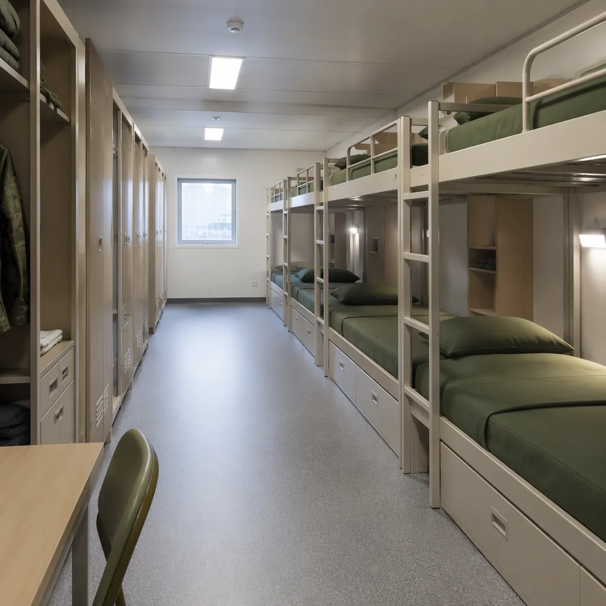

From forward operating bases in extreme climates to emergency housing deployed within hours of a disaster, MODURA military-grade modular systems deliver robust, self-contained facilities that operate independently of local infrastructure — engineered for the most demanding conditions on earth.
Deployed facilities face constraints that civilian construction never encounters — from ballistic threats to total absence of utility infrastructure.
Military operations and disaster response cannot wait for conventional construction timelines. Facilities must be operational within hours or days of arrival, not months. Every hour of delay in emergency housing deployment compounds human suffering.
Deployed facilities must function reliably from arctic cold (-40°C) to desert heat (+55°C), in high humidity, at altitude, and in saline coastal conditions — without degradation of structural integrity or environmental control systems.
Forward locations lack grid power, municipal water, and sewerage infrastructure. Facilities must integrate their own power generation, water treatment, waste management, and communications — arriving as a complete, self-contained operating unit.
Military facilities must withstand repeated deployment cycles, rough handling during transport, blast overpressure, and continuous 24/7 occupation — all while maintaining structural integrity, environmental seal, and operational capability over a 20+ year service life.
Deployed facilities must meet defence standards, NATO agreements, and humanitarian sector specifications that far exceed commercial building codes.
| Parameter | Requirement | MODURA Compliance |
|---|---|---|
| Ballistic Protection | STANAG 4569 Level 1–3 where specified; fragment retention and spall liner options | Composite armour panel integration within module wall cavities; factory-installed without compromising interior space |
| Blast Resistance | Stand-off hardened construction; progressive collapse prevention; glazing hazard mitigation to ISO 16933 | Structural steel frame with ductile connection detailing; laminated glazing in aluminium curtain wall cassettes |
| Seismic Performance | Operational in seismic zones up to UBC Zone 4 / Eurocode 8; post-earthquake occupancy capability | Base-isolated module connections with energy dissipation devices; full-scale shake table testing available |
| Operating Temperature | -40°C to +55°C ambient; internal 20°C ± 2°C maintained across full range | VIP (vacuum insulated panel) enhanced envelope; redundant HVAC with extreme-ambient heat pump and backup electric heating |
| Environmental Sealing | IP65 enclosure rating against dust and water ingress; corrosion resistance C5-M (ISO 12944) for marine/coastal deployment | Continuous EPDM gasket system at all module joints; marine-grade stainless steel fasteners throughout; hot-dip galvanised subframe |
| Design Life | 25-year structural design life with minimum 10 deployment cycles without degradation | Fatigue-rated welded steel connections; corrosion allowance engineered into all structural elements; full NDT inspection at factory |
| Transportability | ISO 668 container-compatible dimensions; stackable 3-high; transportable by road, rail, sea, and C-130/C-17 airlift | Standard 20ft and 40ft ISO footprint modules with corner castings; NATO sling set attachment points as option |
| Rapid Assembly | 50-person barracks fully operational within 48 hours using 4-person team; no crane required for standard configuration | Self-deploying leg system; push-connect MEP interfaces; colour-coded connection system; assembly manual under 20 pages |
| Fire Resistance | 60-minute structural fire resistance; low smoke zero halogen (LSZH) cabling; active detection and suppression | Intumescent coating on exposed steel; LSZH throughout; addressable detection with automated isolation dampers |
| Force Protection | HVM (hostile vehicle mitigation) integrated perimeter options; forced entry resistance to LPS 1175 SR2 minimum | Module-integrated HVM anchoring points; security-rated door and window sets pre-installed at factory |

Our military-grade modular system is designed from first principles for expeditionary deployment. Every module is a self-contained unit with integrated MEP, ready to operate within hours of arrival — no local infrastructure required. Modules are factory-built, factory-tested, and shipped as ISO-compatible units anywhere in the world.
Our modular system serves the full spectrum of military and humanitarian requirements, from tactical infrastructure to long-term base camp facilities.
4, 8, 12, and 50-person accommodation modules with integrated ablutions. Climate-controlled sleeping quarters, personal storage, and blackout capability for shift workers. 48-hour assembly for 50-person configuration with 4-person team.
Role 1 and Role 2 medical treatment facilities with triage, resuscitation, surgical, ward, and isolation modules. Positive/negative pressure zoning, medical gas ring main, and HEPA-filtered theatre modules. Deployable within 72 hours of airlift arrival.
Secure operations modules with EMI/RFI shielding to MIL-STD-461; raised access flooring for cable management; redundant power with UPS and generator backup; integrated communications mast mounting point. SCIF-capable configurations available.
Rapid-deployment family shelter modules with integrated water purification, solar power, and mosquito screening. Hard-sided construction provides dignity, security, and weather protection far exceeding tent solutions. Reusable across multiple deployments.
Classroom modules for education continuity in conflict zones, refugee camps, and post-disaster environments. Child-friendly finishes, natural light optimisation, and integrated sanitation. Deployable as standalone 2-classroom unit or multi-classroom campus.
Complete FOB packages including accommodation, command post, armory, medical station, catering, laundry, gym, and welfare modules. Perimeter-integrated HVM protection and watchtower modules. Designed for 6-month minimum deployment with minimal resupply.
Our defence and humanitarian team is ready to discuss your operational requirements — from rapid procurement frameworks to full turnkey deployed base camp solutions. Security-cleared personnel available for classified briefings.
Get Quote